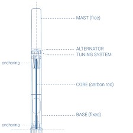
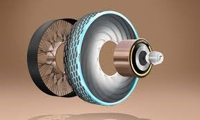
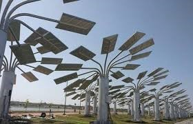
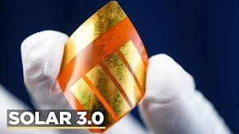
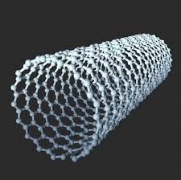
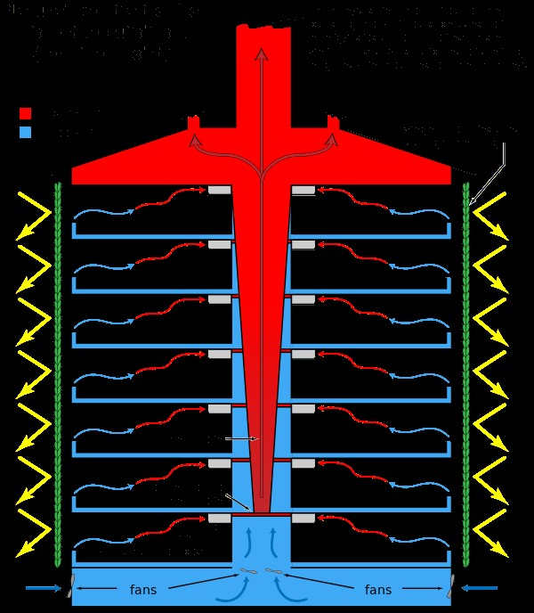

The transition towards a more sustainable future is inevitable if we want to save our planet.
There are a lot of innovations that are shaping the renewable energy sector. New energy
technologies are becoming increasingly popular, creating better awareness around shifting
to cleaner solutions, like green energy technologies. Many industries are implementing
changes and focusing on creating more sustainable solutions, from renewable energy sources,
like solar and wind power to energy storage, electric vehicles, innovative heat pumps, hydrogen
technologies, smart electricity grids and more alternatives for coal, oil and gas.
With the growth of renewables, there is a chance to shift away from using fossil fuels.
Hence, the focus in this article will be on sustainable innovations based on clean energy
technologies that are forming a new, better and greener future for the world.
With technological advances, more things can be monitored and measured, creating the opportunity
for the whole world to build a more sustainable environment.
Here are some of the trends shaping the energy industry.
Solar-Powered Trains:
Thomas A. Edison, one of the most important inventors in the electric power generation sector, said:
“I’d put my money on the sun and solar energy. What a source of power! I hope we don’t have to wait
until oil and coal run out before we tackle that.” It proves that there is a huge potential in solar power.
However, even though solar energy is one of the most popular renewables, it is still not as popular as fossil
fuels. According to the International Energy Agency (IEA), around the world, three-quarters of the additional
renewable capacity in 2023 came from solar photovoltaic (PV) alone, and in comparison to 2022, solar PV and wind
additions are expected to more than double by 2028, consistently surpassing records to reach almost 710 GW.
Many people agree with Edison and try to find more ways of using solar energy to develop renewable energy
innovations and such examples are solar-powered trains. This mode of transportation can run all day without recharge.
As BBC reported in their video about the solar railway (see below), the train exports 75% of the energy it creates
back to the grid.
Food Waste Solar Panels:
There are constant improvements in the energy sectors, one that showcases another improvement
in solar energy are solar panels made from food waste. The revolutionary material was created using
discarded fruit and vegetable luminous particles. It was designed by an engineering student, Carvey Ehren
R. Maigue, who works for AuReus, and with his concept, he became a winner of the James Dyson Award.
Bladeless Wind Energy:

Along with new technology development, there are more advanced solutions for new energy sources,
such as wind turbines. Everyone knows or at least has seen the common and usually big wind turbines
that can be installed offshore and onshore that we wrote about in this article. But has anyone seen a
new wind turbine design that does not require rotating blades?
A Spanish startup, Vortex Bladeless, projected the new design. An elastic rod is used to secure the company’s
3m tall bladeless turbine vertically into the ground. It is built to sway or oscillate within the wind’s speed
range, and the vibration that results from this produces energy. These bladeless turbines can be used in urban
or residential areas without the space required to construct conventional wind farms.
“Rechargeable” Tyres:

Goodyear is developing an innovative idea for electric vehicles to extend the life of tyres and the time
until they need to be changed. The brand unveiled something it calls a “revolutionary self-regenerating
concept tyre that can adapt and change to meet individual mobility needs.”
Imagine a tyre that adapts to weather circumstances, road conditions or the way you want to travel. Goodyear’s
new innovation is created from a biological substance and strengthened with fibres modelled with one of nature’s
strongest substances, spider silk. This makes it completely biodegradable and incredibly durable.
3D Printed Solar Energy Trees:

Instead of cutting down trees for energy, why not plant them? Researchers at the VTT Technical Research
Centre of Finland have created a prototype of a tree that collects solar, kinetic and heat energy from
its surroundings, indoors or outdoors. It can store energy and convert it into electricity to power small
appliances like LED light bulbs, humidifiers, thermometers, and mobile phones.
The artificial energy-harvesting trees can be infinitely replicated with the help of 3D printing. They were
made to resemble trees so they could be placed in gardens and other natural settings.
Waste Power Planes:
One of the most carbon-intensive human activities is air travel. Along with previously mentioned food
solar panels made from waste, waste can be also used in air travel to power planes. These waste-powered
aircraft are propelled by waste-derived fuels, such as ’wet’ human waste, rotting food and sewage, wood and
household trash that react with catalytic chemicals.
Will more companies focus on producing jet fuel from waste carbon sources like food waste and municipal trash?
The climate implications of this fuel would be less than those of traditional fuel because it is derived from plants
that absorb carbon dioxide from the atmosphere. According to Popular Mechanics, Food waste accounts for 6% of worldwide
greenhouse gas emissions, compared to aircraft’s 2.5%. And there is enough usable wet waste to replace 20% of all
aviation fuel, which also means keeping it out of landfill cycles that release methane.
Solar Energy 3.0 :

You have probably heard of the industrial revolutions, like Industry 5.0, which focuses on collaboration
between humans and robots, but have you heard of solar 3.0, the revolution in the solar industry?
The solar 3.0 is a fully dispatchable solar PV power plant that uses battery storage or another storage unit to
enable time shifting, supplying more or less energy to the grid when needed. The main revolution is about bringing
to light perovskites that use 10 to 1000 times less material than crystalline silicon cells, which are most commonly used. Find out more in the video below.
Carbon Nanotubes:

Students from the Massachusetts Institute of Technology have discovered an innovative material consisting
of carbon nanotubes that can produce electricity by absorbing energy from its surroundings.
Tiny carbon particles that can generate a current just by reacting with the liquid around them can be used to
produce power. According to the researchers, the liquid, an organic solvent, pulls electrons from the particles
and creates a current that may be used to operate micro- or nanoscale robotics or chemical reactions.
The Building That Cools Itself:

We were already writing about green buildings, showing how they are an essential part of urban design
that mitigate the effects of climate change and consume less energy and water. But what about buildings
that do not need air conditioning to cool down?
In the wild, termites create towering mounds that are ventilated by an intricate network of tunnels.
Zimbabwean architect Mick Pearce utilised the biomimicry method to create a natural cooling system that
tapped into nature by modelling the creativity of termites. The result is an architectural masterpiece that
utilises cooling air during the night and heat exhaustion during the day to achieve 90% passive climate control
 Thomas A. Edison, one of the most important inventors in the electric power generation sector, said:
“I’d put my money on the sun and solar energy. What a source of power! I hope we don’t have to wait
until oil and coal run out before we tackle that.” It proves that there is a huge potential in solar power.
Thomas A. Edison, one of the most important inventors in the electric power generation sector, said:
“I’d put my money on the sun and solar energy. What a source of power! I hope we don’t have to wait
until oil and coal run out before we tackle that.” It proves that there is a huge potential in solar power.